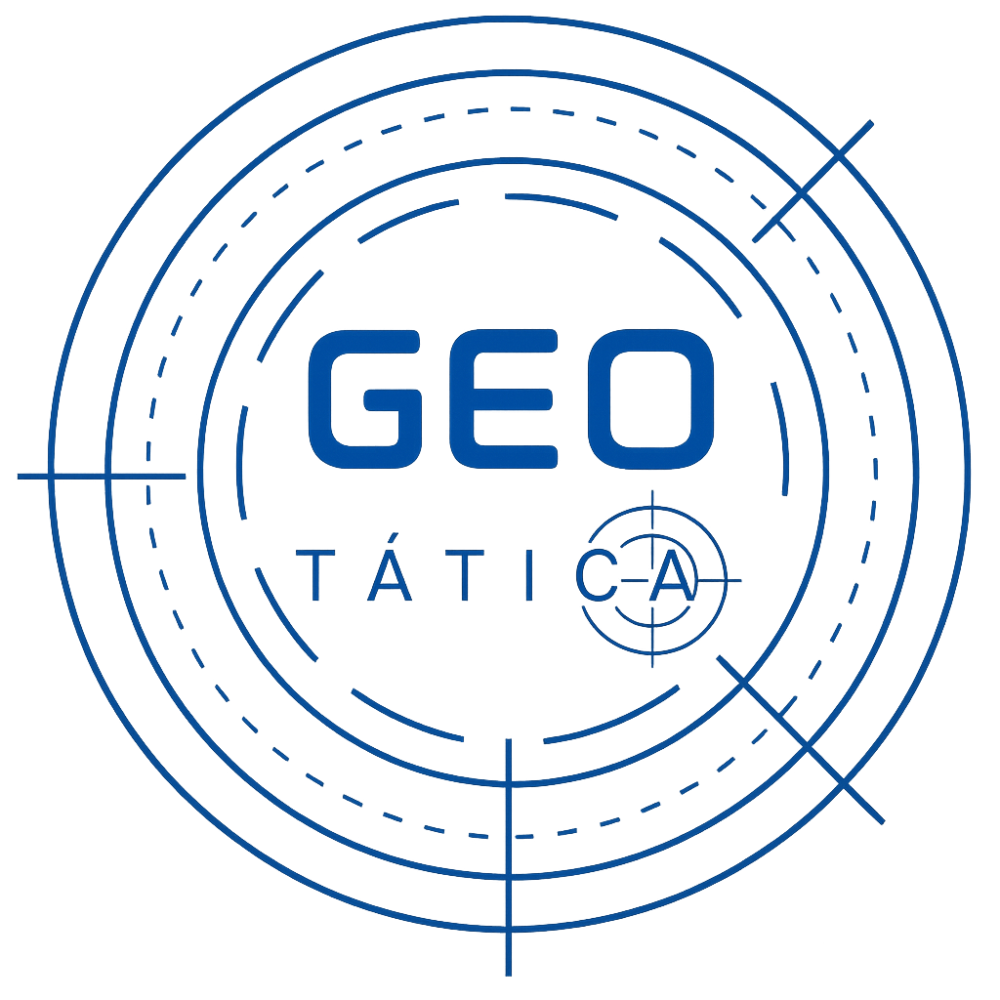

Metadados de apoio para decisão técnica e integração com fluxos de trabalho.
Resumo técnico
Etiquetas e sinais técnicos
Objetivo e informações complementares
Os campos abaixo combinam metadados explícitos e sinais inferidos a partir do texto da própria fonte. Quando algo não estiver informado, o painel mostra isso de forma transparente.
🤖
🤖 Agente Geo
Bem-vindo! 👋 Faça perguntas sobre fontes de dados geográficas e o agente buscará informações em tempo real.

GeoTática | inteligência territorial
330
Fontes de Dados Geográficos
Curadoria de fontes para apoiar estudos, projetos, análises e decisões baseadas em território e dados espaciais.
330Fontes
9Categorias
BR + 🌎Escopo
Escolha uma área da plataforma. A aba Fontes de dados é a área principal de busca. Objetivos explica o catálogo, ISO traz a referência temática, Mapa mostra a distribuição das fontes, e as demais abas reúnem materiais de apoio.
GeoTática · curadoria e inteligência territorial
Responsável pela curadoria
Profissional com mais de 10 anos de experiência em organizações de grande porte, nos setores público e privado, com atuação em geotecnologias aplicadas à gestão de ativos e do território, apoio a processos de licenciamento e tomada de decisão.
Reúne experiência em gestão de projetos e portfólio, com referência em PMBOK 7, FEL e Agile, além de indicadores, BI e rotinas de acompanhamento. Sua atuação integra dados espaciais e necessidades de negócio por meio da estruturação de bases GIS, padronização e qualidade da informação, construção de dashboards em Power BI, governança documental e apoio à gestão operacional.
Tem vivência em gestão imobiliária, coordenação de fluxos de informação, gestão de terceiros, treinamentos e melhoria contínua, com atuação em contextos ligados à mineração, administração pública, meio ambiente e planejamento urbano e territorial.
Apresentação geral da página, do objetivo do acervo e das principais informações que podem ser encontradas aqui. A referência temática ISO também fica nesta aba.
Objetivo da página
A GeoTática reúne fontes gratuitas de dados geográficos, cartográficos, ambientais, territoriais e estatísticos para apoiar buscas técnicas, estudos, projetos, análises espaciais e tomada de decisão.
O que pode ser encontrado
Você pode localizar bases vetoriais, raster, dados tabulares, serviços, APIs, imagens, mapas base e portais oficiais em diferentes escalas territoriais, do nível municipal ao global.
Como navegar
A exploração pode ser feita por temas, tipos de dado, aplicações, estrutura técnica, categoria ISO, recorte territorial e país da fonte, com detalhes complementares disponíveis nos cards.
Escolha como deseja explorar
Esta entrada organiza a exploração em três portas principais. O recorte territorial permanece nos filtros principais, evitando repetição.
As aplicações usam agrupamentos amplos de temas e categorias ISO, sem travar a busca por uma palavra exata.
Temas organizam o conteúdo. Tipos de dado ajudam na busca técnica. Aplicações aproximam a navegação de contextos reais de uso.
Apoio técnico complementar para leitura temática das fontes do catálogo e conferência da taxonomia de referência.
Categorias temáticas adaptadas da ISO
Abaixo estão as categorias temáticas adaptadas da ISO usadas no filtro técnico da plataforma, além da categoria curatorial “Multitemático” para fontes amplas.
Agricultura e pecuáriaCriação de animais e/ou cultivo de plantas. Exemplos: agricultura, irrigação, aquicultura, plantações, pecuária, pragas e doenças que afetam cultivos e rebanhos.
Criação de animais e/ou cultivo de plantas.
Biota e biodiversidadeFlora e/ou fauna em ambiente natural. Exemplos: vida silvestre, vegetação, ecologia, áreas naturais, vida marinha, zonas úmidas e habitats.
Flora e/ou fauna em ambiente natural.
Limites e divisões administrativasDescrições legais da terra. Exemplos: limites políticos e administrativos.
Descrições legais da terra.
Climatologia, meteorologia e atmosferaProcessos e fenômenos da atmosfera. Exemplos: cobertura de nuvens, tempo, clima, condições atmosféricas, mudança do clima e precipitação.
Processos e fenômenos da atmosfera.
EconomiaAtividades econômicas, condições e emprego. Exemplos: produção, trabalho, renda, comércio, indústria, turismo, silvicultura, pesca, caça e exploração de recursos minerais, petróleo e gás.
Atividades econômicas, condições e emprego.
Elevação, relevo e topografiaAltura acima ou abaixo do nível do mar. Exemplos: altitude, batimetria, modelos digitais de elevação, declividade e produtos derivados.
Altura acima ou abaixo do nível do mar.
Meio ambiente e conservaçãoRecursos ambientais, proteção e conservação. Exemplos: poluição, tratamento de resíduos, avaliação de impacto ambiental, monitoramento de risco ambiental e conservação da natureza.
Recursos ambientais, proteção e conservação.
GeociênciasInformações relativas às ciências da Terra. Exemplos: geologia, geofísica, geomorfologia, minerais, solos, processos tectônicos, atividade vulcânica, deslizamentos e erosão.
Informações relativas às ciências da Terra.
SaúdeSaúde, serviços de saúde, ecologia humana e segurança. Exemplos: doenças, fatores que afetam a saúde, higiene, abuso de substâncias, saúde mental e física e serviços de saúde.
Saúde, serviços de saúde, ecologia humana e segurança.
Imagens, mapas de base e cobertura da TerraImagens, mapas base e cobertura da Terra. Exemplos: cobertura da terra, mapas topográficos, imagens, imagens não classificadas e anotações.
Imagens, mapas base e cobertura da Terra.
Defesa e inteligênciaBases, estruturas e atividades militares. Exemplos: quartéis, campos de treinamento, transporte militar e coleta de informações.
Bases, estruturas e atividades militares.
Águas interioresFeições de águas interiores, sistemas de drenagem e suas características. Exemplos: rios, geleiras, lagos salinos, planos de uso da água, barragens, correntes, cheias, qualidade da água e cartas hidrográficas.
Feições de águas interiores, sistemas de drenagem e suas características.
Localização e geodésiaInformações e serviços de posicionamento. Exemplos: endereços, redes geodésicas, pontos de controle, zonas e serviços postais e nomes geográficos.
Informações e serviços de posicionamento.
Oceanos e zonas costeirasFeições e características de corpos de água salgada, excluindo águas interiores. Exemplos: marés, ondas de maré, informações costeiras e recifes.
Feições e características de corpos de água salgada, excluindo águas interiores.
Planejamento e cadastroInformações usadas para ações adequadas para uso futuro da terra. Exemplos: mapas de uso da terra, zoneamento, levantamentos cadastrais e propriedade fundiária.
Informações usadas para ações adequadas para uso futuro da terra.
SociedadeCaracterísticas da sociedade e das culturas. Exemplos: assentamentos, antropologia, arqueologia, educação, crenças tradicionais, costumes, dados demográficos, lazer, avaliação de impacto social, crime, justiça e censos.
Características da sociedade e das culturas.
Infraestrutura e construçõesConstruções feitas pelo ser humano. Exemplos: edifícios, museus, igrejas, fábricas, habitação, monumentos, lojas e torres.
Construções feitas pelo ser humano.
TransportesMeios e suportes para transporte de pessoas e/ou bens. Exemplos: rodovias, aeroportos, rotas de navegação, túneis, cartas náuticas e aeronáuticas, localização de veículos ou embarcações e ferrovias.
Meios e suportes para transporte de pessoas e/ou bens.
Serviços públicos e comunicaçãoEnergia, água, resíduos e infraestrutura e serviços de comunicação. Exemplos: hidreletricidade, geotermia, energia solar e nuclear, purificação e distribuição de água, esgoto, distribuição de eletricidade e gás, comunicação de dados, telecomunicações, rádio e redes de comunicação.
Energia, água, resíduos e infraestrutura e serviços de comunicação.
MultitemáticoCategoria curatorial da GeoTática para portais, catálogos, IDEs e repositórios amplos, com múltiplos temas e sem predominância temática clara.
Categoria curatorial para fontes amplas e transversais.
Observação: “Multitemático” é uma categoria curatorial da GeoTática, adaptada para portais, IDEs, catálogos e repositórios amplos.
Categoria temática adaptada da ISO
Descrição complementar baseada na classificação temática de alto nível usada para busca e agrupamento de dados geográficos.
Leitura técnica
Base conceitual: categorias MD_TopicCategoryCode da ISO, com adaptação curatorial da GeoTática.
🌐
Origem das Fontes no Mundo
Mapa principal da distribuição geográfica dos portais e organizações incluídos no hub
Clique nos marcadores para detalhes
Catálogo técnico
Buscar fontes geográficas
Use a busca e os filtros para encontrar a base certa mais rápido. Os metadados completos continuam disponíveis no painel de detalhes.
🔍
Refina o âmbito geográfico da fonte.
Use este campo para a categoria temática da ISO 19115-1, incluindo a classe curatorial Multitemático.
Geoespaciais agrupam vetor, raster e dados georreferenciados.
Exibindo 0 de 0 fontes
Busca principal do catálogo. O filtro geoespacial agrupa raster, vetor e dados georreferenciados.
Nenhuma fonte encontrada para esta busca.
📚
Trilha de Aprendizado em Geoprocessamento
Do básico ao avançado, ebooks, manuais, revistas, artigos e vídeos gratuitos
Fundamentos de cartografia, SIG e sensoriamento remoto para quem está começando. Conceitos essenciais e primeiros passos com software.